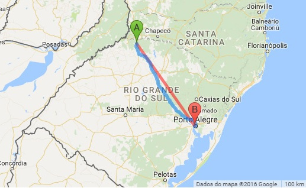

Rua dos Arcos
Rua Mauricio Cardoso
Catedral
Centro - FW
Monumento Cristo Rei
Basilica São Cristovão - FW
Sobre
Os primeiros migrantes chegaram em 1918, época em que aconteceu a abertura das primeiras picadas, anteriores a estrada definitiva, que levou 10 anos para ser construída, entre Boca da Picada (atual município de Seberi) e Águas do Mel (atual Iraí).Os primeiros carreteiros, sob o comando de um comerciante estabelecido na Boca da Picada, faziam o transporte de produtos manufaturados e da produção agrícola. Numa dessas viagens, um barril de aguardente caiu da carroça, danificando a tampa e, para não jogar fora a vasilha, eles tiveram a ideia de colocá-lo de boca para baixo sobre uma fonte, abaixo de uma sombra, introduzindo uma taquara no orifício lateral. A localização do barril à beira da estrada, com água limpa e muita sombra, colaborou para o surgimento da expressão “vou descansar, comer e dormir no barril”. Assim o lugarejo foi crescendo na selva do Vale do Alto Uruguai, e passou a chamar-se simplesmente “Barril”, nome que permaneceu por anos.
Frederico Westphalen é o maior município da microrregião do Médio Alto Uruguai. Principal centro comercial desta região, na cidade o comércio representa o maior percentual de seu PIB. A economia industrial em Frederico Westphalen se dá através de indústrias expressivas nas áreas metalúrgica, produtos em fibra de vidro, lapidação de pedras semi-preciosas (o sub-solo da região é repleto de jazidas de pedra ametista, uma pedra de coloração roxa mundialmente conhecida), fábrica de colchões e fábrica de ração, entre as principais. Possui um dos maiores abatedouros de suínos do estado e também é forte seu potencial agroindustrial, com agroindústrias familiares, de pequeno porte. A agricultura se caracteriza pela pequena propriedade (agricultura familiar). Frederico Westphalen produz feijão, milho, soja; pratica-se a avicultura e a suinocultura; existem programas para desenvolver a piscicultura, a produção de hortaliças, e, recentemente, a plantação de mamona
Distância

| Rota de viagem | Distância (Km) | Tempo estimado de viagem |
|---|---|---|
| De Carro | 428 Km | 5 Horas 34 min |
| À pé | 428 Km | 3 Dias 17 horas |
| Avião - linha reta | 304 Km | 27,4 Minutos |
| Distância para Porto Alegre |
Contato
Nome
Telefone
Mensagem
Prova desenvolvida por:
Edson Elias Cazarotto e William Alexandre Ferreira
Copyright @ Your Website 2016